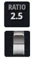

SOBRE O CURSO
O curso sobre a mesa de som Soundcraft UI16 tem como objetivo fornecer aos participantes uma
compreensão
aprofundada das funcionalidades e recursos da mesa de som digital Soundcraft UI16.
Durante o curso, os participantes terão a oportunidade de aprender sobre as diferentes seções da mesa
de
som,
como o mixer, processadores de efeitos, equalizadores e a interface de usuário.
Os participantes terão a oportunidade de interagir com a mesa de som Soundcraft UI16 durante o curso,
por
meio de atividades práticas que permitirão a exploração das diferentes funcionalidades.
Ao final do curso, espera-se que os participantes sejam capazes de utilizá-la de forma eficiente na
produção
de eventos ao vivo.
1. INTRODUÇÃO
1.1 VISÃO GERAL DA MESA DE SOM
A mesa de som Soundcraft UI16 é uma mesa de som digital de 16 canais, projetada para oferecer
alta
qualidade de áudio e versatilidade em diferentes aplicações, como gravação em estúdio, produção
de
eventos ao vivo, entre outras.
A mesa de som possui um mixer digital que oferece controle individual para cada um dos 16 canais,
com
ajustes de volume, pan, mute e equalização de três bandas. Além disso, a mesa também conta com
um
equalizador gráfico de 31 bandas, que permite o ajuste de frequências de forma mais precisa e
abrangente.
A Soundcraft UI16 também possui uma seção de mixagem de efeitos, que permite a adição de
diferentes
tipos de processadores de efeitos, como reverb, delay, chorus e outros. A seção de mixagem de
efeitos possui quatro canais de retorno que podem ser ajustados individualmente.
Outro recurso importante da mesa de som Soundcraft UI16 é a capacidade de controle remoto via
tablet
ou smartphone. O usuário pode conectar o dispositivo móvel à mesa de som por meio de uma rede
Wi-Fi
e controlar os ajustes e funções da mesa de som a partir de qualquer local na área de cobertura
da
rede.
A mesa de som Soundcraft UI16 também oferece opções de gravação e reprodução, permitindo que os
usuários gravem e reproduzam áudio diretamente na mesa, utilizando um dispositivo de
armazenamento
USB ou um cartão SD.
Em resumo, a mesa de som Soundcraft UI16 é uma mesa de som digital versátil e fácil de usar, que
oferece uma ampla gama de recursos e funcionalidades para ajudar a criar mixagens de áudio de
alta
qualidade em diferentes contextos e aplicações.
1.2 LAYOUT DOS CANAIS E RECURSOS BÁSICOS
3. CANAIS
Os mixers da série Ui têm vários tipos de canais de entrada e de saída. Você pode visualizar todos os
canais na tela MIX, arrastando o mouse/dedo por toda a console virtual.
3.1 GAIN

A página Gain permite que você controle os aspectos do sinal de entrada de um canal de entrada do
Ui.
É o tipo de módulo de canal com os indicadores de nível do fader a vermelho.
As entradas de áudio têm um intervalo de ganho de entrada entre –40dB e +60dB.
Deverá certificar-se de que o fader GAIN está para baixo quando conectar novas fontes.
Evite a “distorção” da entrada: quando vir a luz vermelha piscando constantemente, o sinal ficará
distorcido. Basta reduzir o ganho para evitar que isso aconteça.
Quando você mudar de MIX para GAIN, os faders de volume mudam para os faders GAIN (linha vermelha
sob
o botão do fader).
No software para Tablet, os botões MUTE e SOLO mudam para os botões +48V (Phantom power) e
(reversão
de fase).
No software para Telefone, estes controles encontram-se na página EDIT (você pode tocar duas
vezes no
nome dum canal para mudar mais rapidamente para a página EDIT).
É necessário Phantom Power para ligar certos microfones, como os microfones de condensador ou
outros
dispositivos ativos, como um DI ativo.
3.2 MIX
A página MIX é a página padrão do software de controle do Ui e permite que você controle o
roteamento
e o posicionamento, bem como os faders dos canais de entrada do Ui.
Por favor, note: o software para Telefone mostra posicionamento/equilíbrio, o status solo e
silenciado, mas você tem de usar a página EDIT para usar os controles. Os controles são
descritos
nesta seção.
3.2.1 FADER
Ajusta o nível deste canal na mixagem estéreo master.
3.2.2 MEDIÇÃO
A medição de VU do ganho de entrada e do nível do canal. Os medidores de VU na página MIX têm
duas
cores. Os medidores azuis mostram o ganho de entrada (da página GAIN) e os medidores amarelos na
parte superior mostram o nível do canal.
Por favor note que o equalizador e o compressor de dinâmica afetam os níveis do canal.
3.2.3 MUTE
Desligar o sinal de áudio de um canal. O botão MUTE desativa imediatamente o áudio em vez de
diminuir
o fader (e elimina a possibilidade de se esquecer de sua posição original). O botão MUTE
silencia a
saída do canal para o bus estéreo principal. Pode também silenciar um envio de AUX, dependendo
do
status AUX ou PRE do POST (o AUX pós-fader será silenciado).
3.2.4 SOLO
Isolar este canal. O botão SOLO fica cinzento quando não puder ser utilizado e fica amarelo
quando
está operacional. Pressione o botão SOLO para ouvir apenas este canal.
3.2.5 PAN
Ajustar o Pan/Equilíbrio Em um canal mono, este controle é o Pan, com uma “linha de
posicionamento”
azul. Em um canal (com ligação) estéreo, este controle é o Equilíbrio, com uma “linha de
equilíbrio”
amarela. A opção Pan move apenas uma fonte da esquerda para a direita. A opção Equilíbrio move a
imagem estéreo completa da esquerda para a direita.
3.2.6 EXIBIÇÃO DO CANAL
Exibição numérica do nível e do posicionamento do fader Mostra o nível do sinal como um nível em
dB.
Mostra também o Pan (posicionamento) durante três segundos depois de o controle deslizante de
posicionamento ser movido.
3.2.7 NOME DO CANAL
Acesso ao submenu do canal, à identificação do canal, à seleção do canal O nome do canal é,
geralmente, um nome ou descrição desse canal. Você pode tocar nos nomes dos canais para
selecionar
esse canal, clicar ou tocar duas vezes no nome dum canal para acessar a tela EDIT ou pressionar
o
nome dum canal para acessar o submenu do canal.
3.3 AUX SENDS
As saídas AUX (AUX OUTPUTS) são as saídas no canto superior direito do mixer Ui. Estas saídas têm
o
seu próprio conjunto de fontes de entrada, separadas da mixagem master.
Geralmente, as saídas AUX são usadas para que os músicos se ouçam suas próprias mixagens através
das
colunas no palco ou dos headphones dos amplificadores, para monitoração por ouvido.
AUX SENDS é onde as mixagens AUX são criadas: por exemplo, podem ser saídas de monitoração,
envios de
efeitos, dentre outros. Têm saídas dedicadas no Ui. Os faders AUX têm linhas indicadoras laranja
e
indicam a quantidade de cada canal de entrada que é contribuída para o bus AUX.
3.3.1 M–AUX/COPY MIX
Copia a mixagem MASTER para este bus AUX Este botão copia as posições do fader da página MIX e
move
todos os faders de envio para a mesma posição na página AUX SENDS.
Este ponto de partida para uma mixagem AUX é melhor do que começar com todos os faders em baixo.
Pode pressionar este botão a qualquer momento se quiser que as posições do fader da mixagem no
seu
monitor se assemelhem à mixagem principal.
Por razões de segurança, é necessária uma confirmação do usuário.
3.3.2 PRE/POST (software para Tablet)
Muda a contribuição AUX do canal de entrada entre pré e pós-fader.
Os envios AUX são pré-fader por predefinição, o que significa que os faders de volume na página
MIX
não afetam os níveis dos envios AUX.
Pressione o botão PRE para alterar os canais correspondentes para POST (pós-fader).
Pressionar longamente o botão PRE/POST abre uma caixa de diálogo para ALL CHANNELS TO PRE ou ALL
CHANNELS TO POST.
3.3.3 AUX SEND MUTE (software para Tablet)
Silencia a contribuição do canal de entrada para este bus AUX. Independente do canal de entrada
normal sem som – afeta apenas a contribuição do bus AUX selecionado.
3.3.4 CANAIS AUX OUT
O canal AUX OUT é o caminho de saída para seus respectivos buses AUX. Em outras palavras, a
mixagem
AUX 1 de todos os canais de entrada passa pelo canal AUX 1 OUT antes de ser enviada pelo soquete
AUX
OUTPUTS 1.
Os canais AUX OUT têm os seus próprios canais EDIT.
Pode visualizar todos os canais AUX OUT na tela MIX (à direita) ou selecionando AUX MASTERS no
painel
Slideout do software para Tablet ou no menu pop-up JUMP TO do painel Slideout do software para
Telefone.
6. EDIT
A página EDIT é o ponto de acesso básico ao processamento de sinal baseado em canais: Equalizador,
compressor de dinâmica e envios AUX e de efeitos.
O processamento real e as opções disponíveis dependem do tipo de canal.
O módulo de canal selecionado será exibido no lado esquerdo da tela EDIT. No software para Telefone,
a
página padrão EDIT é a forma de ter uma visualização mais detalhada e permite também acessar os
parâmetros básicos do canal, como Pan/Equilíbrio, Fase, phantom power, dentre outros.
6.1 EQUALIZADOR PARAMÉTRICO
O equalizador ajusta a amplitude de um sinal de áudio de acordo com determinadas frequências. Os
canais de entrada do Ui, os canais de retorno de efeitos e o subgrupo master têm um equalizador
paramétrico de 4 bandas, um filtro passo-alto (HPF) e um De-Esser controlado a partir da mesma
tela.
O visor também inclui um Analisador em Tempo Real (RTA) opcional, que mostra uma visão espectral
do
sinal de entrada. Além disso, o equalizador pode ser ligado a um “EASY EQ” de três bandas
(frequência fixa, Q fixo).
6.1.1 EASY EQ ON/OFF
Ativar ou desativar a função.
ASY EQ Easy EQ é um modo de três bandas, frequência fixa e Q fixo com uma banda média de tipo
sino e
também bandas baixas e bandas altas.
Desligar o Easy EQ (OFF) preserva a “curva” no equalizador paramétrico. No entanto, ativar o Easy
EQ
(ON) redefine a curva atual uma vez que as configurações do equalizador paramétrico não podem
ser
mapeadas para o formato Easy EQ.
6.1.2 REAL TIME ANALYSER
Ativar ou desativar a função RTA.
O visor RTA mostra a vista espectral em tempo real do áudio recebido. Por vezes, pode ser útil
para
orientar rapidamente algumas características específicas com bandas do equalizador.
6.1.3 DE-ESSER ON/OFF

Ligar ou desligar o processamento De-Esser Quando está desligado, não será apresentada qualquer
esfera de arraste do De-Esser na interface gráfica principal do equalizador.
6.1.4 RESET
Redefinir o equalizador para os valores padrão O equalizador está definido como “plano” e a
frequência e os valores Q são redefinidos para suas predefinições.
6.1.5 BYPASS
Ignorar a seção do equalizador do canal selecionado Este controle ignora apenas o equalizador
paramétrico. O HPF e o processamento De-Esser não são afetados.
6.1.6 ATRIBUIÇÃO DO FADER DO EQ/DE-ESSER
Escolher os faders do EQ ou do De-Esser Controla quais parâmetros podem ser definidos com os três
faders de controle. Para o equalizador, os faders mostram os valores para a banda selecionada.
6.1.7 DS - ESFERA DO DE-ESSER
Uma esfera gráfica que pode ser arrastada para controlar o De-Esser Arraste este elemento gráfico
para efetuar o controle. Os movimentos PARA CIMA/PARA BAIXO ajustam o Limite e os movimentos
ESQUERDA/DIREITA ajustam a frequência. Aperte os dedos ou use a roda do mouse/trackpad sobre a
esfera do DE-ESSER para ajustar o valor da taxa (Ratio). Clique ou toque duas vezes para
redefinir.
6.1.8 1/2/3/4 - ESFERAS DE BANDA DO EQUALIZADOR

Esferas gráficas que podem ser arrastadas para controlar a banda do equalizador Arraste este
elemento
gráfico para efetuar o controle. Os movimentos PARA CIMA/PARA BAIXO ajustam o ganho e os
movimentos
ESQUERDA/DIREITA ajustam a frequência. Aperte os dedos ou use a roda do mouse/trackpad sobre a
esfera do EQ para ajustar o valor da largura de banda (Q). Clique ou toque duas vezes para
redefinir
uma banda individual.
6.1.9 ESFERA DO HPF
Esfera gráfica que pode ser arrastada para controlar o filtro passa-alto Arraste este elemento
gráfico para efetuar o controle. Os movimentos Direita/Esquerda ajustam a frequência de corte.
Clique ou toque duas vezes para redefinir.
6.1.10 FREQUÊNCIA DO DE-ESSER
Fader de controle da frequência do De-Esser Determina a frequência central do filtro dinâmico do
De-Esser – a frequência na qual o processo de de-essing está centrada. Para acessar o fader
De-Esser
controla no software do telefone, toque no botão DE-ESSER SETUP.
6.1.11 DE-ESSER THRESHOLD
Controle do fader do limite do De-Esser O limite do De-Esser é o nível a que o De-Esser começa a
atenuar a banda “ess”. Para acessar o fader De-Esser controla no software do telefone, toque no
botão DE-ESSER SETUP.
6.1.12 DE-ESSER RATIO

Controle do fader da taxa do De-Esser A taxa do De-Esser é o valor pelo qual a banda “ess” é
atenuada
quando o nível de áudio atinge o limite. Para acessar o fader De-Esser controla no software do
telefone, toque no botão DE-ESSER SETUP.
6.1.13 FREQUÊNCIA DO EQUALIZADOR
Controle do fader da frequência da banda do equalizador O controle do fader do equalizador só
está
disponível no software para Tablet. Clique ou toque duas vezes para redefinir.
6.1.14 EQ Q
Controle do fader do equalizador “Q” O Q é, efetivamente, uma forma de medir o tamanho e a
grossura
da forma em sino da banda do equalizador. Quanto menor for o Q, maior é a largura de banda
afetada e
vice-versa. O controle do fader do equalizador só está disponível no software para Tablet.
Clique ou
toque duas vezes para redefinir.
6.1.15 EQ GAIN
Controle do fader do ganho da banda do equalizador O valor pelo qual a banda do equalizador
selecionada é aumentada ou atenuada. O controle do fader do equalizador só está disponível no
software para Tablet. Clique ou toque duas vezes para redefinir.
6.2 DYN (COMPRESSOR)
A seção Compressor de dinâmica do Ui é uma seção extensa sobre o compressor/limitador de áudio e
as
portas. Basicamente, um compressor reduz o nível de áudio ao ultrapassar um determinado limite.
Você
pode definir o parâmetro Release para “Inf” (infinito) e criar um Limitador.
Uma porta de áudio utiliza um limite para determinar se está “aberto” (acima do Threshold) ou
“fechado” (abaixo do Threshold). Quando uma porta é fechada, o nível do sinal é reduzido ou
cortado
totalmente. Uma porta pode ser utilizada, por exemplo, para reduzir o ruído de fundo captado por
um
microfone quando a fonte (instrumento/voz) não está ativa.
6.2.1 THRESHOLD

Ajustar o limite do compressor.
A versão para Tablet do software inclui um fader THRESHOLD horizontal. Você pode arrastar a
esfera
laranja “T” no gráfico do compressor de dinâmica das versões para Telefone e Tablet.
6.2.2 GATE
Ajustar o limite da porta.
Quando o nível de sinal de áudio cai abaixo desse limite, o sinal é reduzido. O limite da porta
gate
é representado no gráfico do compressor de dinâmica como uma zona horizontal escurecida.
6.2.3 RATIO

Ajustar a taxa de compressão.
Esta taxa determina o quanto o compressor atenua o som depois de passar do nível do limite. Uma
configuração infinita (Inf) faz com que o compressor seja um limitador.
6.2.4 ATTACK
Ajustar o compressor.
Attack Esta é a velocidade com que o compressor reage e atinge a atenuação definida pelo
parâmetro
RATIO.
6.2.5 RELRASE
Ajustar a liberação do compressor.
Esta é a velocidade com que o compressor retorna ao ponto “sem atenuação” após o nível do sinal
cair
abaixo do nível do limite.
6.2.6 GAIN
Ajustar o ganho de produção do compressor.
A compressão resulta na redução total no nível de sinal, de modo que o controle de GAIN seja
fornecido para “produzir” os ganhos perdidos. A forte compressão mais o ganho de produção pode
resultar em um aumento na intensidade geral.
6.2.7 GRM - METERING
Medição da redução de ganho.
Há três medidor: Entrada de sinal, sinal de saída e um medidor que mostra a quantidade de
atenuação
sendo aplicada devido a dinâmica transformação.
6.2.8 RESET
Redefina o compressor de dinâmica para este canal para os valores padrão.
6.2.9 BYPASS
Anula a ação do compressor de dinâmica para este canal.
6.2.10 SOFT KNEE/HARD KNEE
Definir o modo SOFT KNEE ou HARD KNEE para o compressor Isso determina como o nível do limite é
interpretado. O modo HARD KNEE é o limite que representa uma transição brusca. O modo SOFT KNEE
representa uma transição gradual.
6.2.11 PRESETS
Salvar/carregar as predefinições do compressor de dinâmica.
Mostra uma caixa de pop-up de gerenciamento de predefinições padrão.